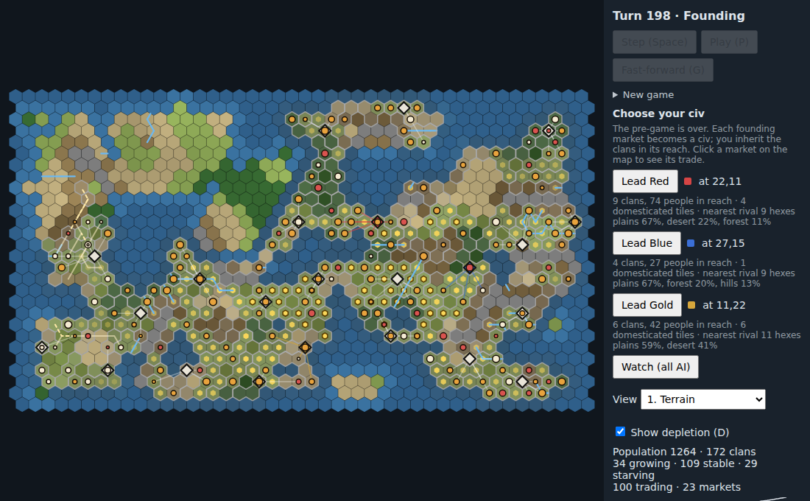
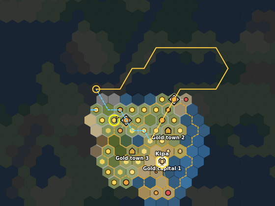

Sans Fiat
A guide to the proof of concept: what it is, how to play it, and how the rules underneath work.
src/data.js and src/modules/*/data.js) and is quoted with its constant name, so you can check it.
Where the code and docs/DESIGN.md disagree, this guide follows the code.1. What Sans Fiat is
Sans Fiat ("without fiat money") is a turn-based hex 4X set when people were starting to farm. It has no money. No civ has a treasury and nothing has a list price. Goods are physical: grain, game, fish, wood, stone, clay and pottery sit in a place, spoil, and have to be carried. A good is worth whatever people will trade for it at a market this turn.
People run the economy. Clans forage, eat, grow, split, move and trade on their own. You don't give them orders. You lead a civ: you can draft some of its people's labour, choose what its cities build, post its goods at market, give food to win other clans over, and send scouts, armies and porters out. Clans that don't belong to anyone keep living by the same rules all game.
A game has three parts:
- Pre-game. A few seed clans spread over an empty map. You watch or skip this part.
- Founding. The busiest markets with domesticated grain nearby become civs, and you pick one to lead.
- Main game. You play until one civ holds every founding city (conquest) or the turn limit ends the game (prosperity).
2. Starting a game
Run npm start and open http://localhost:8000. The URL takes two settings:
?seed=N&players=N. With no seed you get a random one; players defaults to 3. A game can have 2 to 4
civs (PLAYERS = 2–4): you plus 1–3 AI civs.
To start a new game in the browser, open New game in the side panel. It is unfolded during the pre-game and after the game ends, and folded the rest of the time. Type a Seed, pick Civs (2, 3 or 4), and press Load. The random link loads a new random seed. Both reload the page with the new URL. The same seed and civ count always make the same map and the same pre-game.
3. The pre-game
You start at turn 0 with CLAN.seeds = 3 clans of CLAN.startPop = 6 people each. Nobody
controls them. They forage, settle, divide and trade at temporary gatherings. Grain on land they hold for a long
time slowly becomes domesticated. The pre-game ends once there is one founding site per player (see
Founding a civ). That can happen from turn PREGAME.minTurns = 100, and the pre-game always ends by
PREGAME.maxTurns = 500. On the tested seeds it ends at about turn 150–200.
You can watch it at any speed:
- Step (Space) runs one turn.
- Play (P) runs one turn every 150 ms. Press it again (it reads Pause) to stop.
- Fast-forward to founding (G) runs 5 turns per frame and stops at founding.
- Skip pre-game (K) computes the rest at once. This button is shown only during the pre-game.
Every way of running it gives the same result. Skipping still records each turn, so game.replay() in the
console reproduces the game.
Reading the map
Terrain
Plains are light green, forest dark green, hills brown, desert sand, mountains grey and ocean blue (shallows a lighter blue). Darker tiles are less fertile. With Show depletion (D) on, tiles that have been foraged bare are darker still. Rivers are blue lines.
Clans
A clan is a dot sized by its population. Cream means it is growing, orange means stable, and red means starving. A clan's land is tinted and outlined in its colour. Once civs exist, a civ's clans use the civ's colour and unaligned clans are grey. A faint line trails behind a clan that moved recently, and a dashed line shows a walking clan's route.
Markets
A market is a diamond. A pre-game gathering is a translucent dashed diamond. A permanent neutral market is cream, and a civ's founding market is in the civ's colour. Lines join each trading clan to its market. Clicking a market also shades its reach.
Grain
A small yellow hexagon marks wild grain that is being tended. It gets brighter as the grain is tamed. Fully domesticated grain has a dark outline.
View switches the map to a debug heat map, using keys 1–0, -, =. The views are Terrain, Population, Fertility, Gross yield, Site yield, Diet variety, Stock, Occupation, Settled, Tended grain, Trail cost (hidden) and Impassable. In the main game a heat map shows only tiles you have seen. The trail-cost view shows only costs your scouts have revealed, so the views can't leak hidden information.
4. Founding: picking a civ

When the pre-game ends, the status reads Founding, the turn buttons are disabled, and Choose your civ appears. Each candidate has:
- a Lead <Name> button and the market's position;
- the clans and people in its market's reach, which become your first members;
- its domesticated tiles, which feed you and are where new cities can grow;
- its distance to the nearest rival, in hexes. A close rival is a threat early on (see the warning under war);
- its top three terrains. Forest gives wood, hills give stone, and rivers give clay.
Click a market on the map to see its trade before you choose. Watch (all AI) gives every civ to the AI. In that mode, fast-forward runs until someone wins.
When you choose, the main game begins. Each civ's capital is raised on its market. Every clan within reach of a civ's market joins the nearest such civ. Each civ gets one free scout.
5. The screen
The map is on the left and the side panel on the right. The panel scrolls. From top to bottom it shows:
| Section | What it shows |
|---|---|
| Status | Turn N · Pre-game / Founding / Game, plus the victory or defeat banner. |
| Controls | Step / End turn, Play, Fast-forward, and Skip pre-game (pre-game only). |
| New game | Seed and civ count (see Starting a game). |
| Choose your civ | At founding only. |
| View, legend, depletion | The map mode. A heat-map view shows a colour ramp with its low and high values. |
| Summary | In the pre-game and in watch mode: world population, clans that are growing, stable or starving, markets, and a population sparkline. When you lead a civ: your people and clans, how many are growing or starving, what you have seen, and the list of civs (fallen marks a civ with no cities). |
| Selected tile | Terrain, fertility, how long the tile has been held, grain taming, and each food's stock and cap. If a clan is there: its owner, people, how well fed it is, its land, harvest, basket after trade, store, trip cost, and a Why list of its recent decisions. If there is a market: its owner, traders, volume, exchange-ratio bars and a ratio history chart. |
| Civ panel | Your civ: prosperity countdown, droughts near you, actions for the selected tile, cities and their projects, labour, the store and posting table, discoveries, clans leaning toward you, and granary spoilage. |
| Supply | Food in the store, building porters, porter orders, and your caches. |
| Army | Raising armies, the selected captain's panel, and promoting cut-off detachments. |
| Scouts | Your scouts, the Build scout button, and how to give routes. |
| How to play | A short reminder that links to this guide. |
| Alerts | The last 10 lines that concern you. |
| Mine only / log | The last 30 log lines, newest first. Mine only keeps lines that name your civ, plus alerts. |
Clicking and keys
Clicking a tile selects it, and the panel shows what's there. The same click also goes to the unit controls, in this order: civ, supply, army, then scouts. The first one that uses the click keeps it. This is how you select a scout, captain or porter, or give it its next order. A white outline marks the selected tile.
| Key | Does |
|---|---|
| Space | Step one turn (in the main game, End turn) |
| P | Play or pause |
| G | Fast-forward: to founding in the pre-game; 10 turns in the main game (FAST_TURNS); to the end in watch mode |
| K | Skip the pre-game |
| Esc | Clear the selected tile and every unit selection and mode (scout, captain, porter, paint brush) |
| D | Show or hide depletion |
| 1…0 - = | Map views |
Keys do nothing while the cursor is in a text box or dropdown.
6. Turns, alerts and the log
In the main game the first button reads End turn (Space). The other civs act during the turn, so there is nothing to
wait for. Your orders take effect as soon as you click them. Harvests, trade, growth and fights are worked out when you end the turn. One turn runs these phases in order (PHASES in src/rules.js):
- regrow: tiles regrow, scaled by good and bad years.
- forage: civs draft workers; clans move, adjust their land, decide whether to trade, and harvest; city workers produce.
- trade: civs post goods; every market clears; civs collect what they received.
- settle: clans eat, grow or starve, divide or split; the civ store spoils, takes its levy, and is capped; cities are founded.
- occupy: grain on held land tames; grain on abandoned land goes feral.
- markets: gatherings form and fade; clans join civs.
- orders: AI civs act; scouts work; porters walk.
- armies: zones spread, skirmish, capture; armies eat and resupply; caches spoil.
- discoveries: discoveries, victory, fog.
At the end of each turn every unit's labour refills to its labourMax.
The log lists what happened. Lines about you start with !, show in amber, and are also copied into
Alerts: your city captured, a pillage on your land, a hungry army, a stuck scout, a lapsed site choice, a drought on your
land, a finished project, a clan joining you. An action that fails adds a line starting ✗ with the reason. Disabled
buttons show the same reason in their tooltip, and the army and supply panels also print it next to the button.
Fog. When you lead a civ you only see what your units, cities and clans can see. Unseen land is nearly black with a faint hint of its terrain colour. Land you have seen before but can't see now is dimmed. Clicking an unseen tile shows only its terrain and "Unexplored". Clans, markets and units on unseen tiles aren't drawn. In watch mode there is no fog.
End of game. When someone wins, the status shows a banner: green if you won or if you are watching, red if you lost. It reads <Civ> wins by conquest/prosperity on turn N. End turn and Play are disabled, and New game unfolds. If you lose your last city before then, a red banner reads <Civ> has fallen. You can keep ending turns to watch, or start a new game.
7. Everything you can do
All of these apply to your own civ in the main game. The UI won't send an order for another civ.
| Action | Where | Cost and limits |
|---|---|---|
| Granary project | Civ panel, under Cities (or select the city's tile) | 4 wood and 2 clay taken from the store at once, then 10 labour from drafted workers. CIV.projects.granary |
| Storehouse project | same | 6 wood, 2 stone, 12 labour. CIV.projects.storehouse |
| Wall project | same | 6 stone, 2 wood, 15 labour. CIV.projects.wall. One project per city at a time; each building once per city. |
| Posting at market | Civ panel store table: −5, +5, auto | Free. Sets how much of a good you keep; everything above it is posted every turn. A bold keep is one you set yourself. |
| Gift food | Select an unaligned clan you can see: Gift 5 food / Gift 10 food (each button shows the leaning it would add) | Food from your store, at most CIV.giftMax = 10 per clan per turn. |
| Found next city here | Select an empty tile | Free. Lapses after CIV.citySiteTurns = 40 turns. While it is set, no city is founded anywhere else. clear cancels it. |
| Send next daughter here | Select a tile | Free. Lapses after CIV.siteTurns = 20 turns. clear cancels it. |
| Build scout | Scouts panel | Free. At most SCOUT.maxPerCiv = 3. Appears at your first city. |
| Send a scout | Click your scout (a flag), then a tile | Uses the scout's own labour: 4 a turn (SCOUT.labourMax). |
| Route from a city | Select scout, click one of your cities, then the far end | Same. Click the city twice to send the scout to the city itself. |
| Stop a scout | Scouts panel, with the scout selected | Free |
| Raise army | Army panel, one button per city | ARMY.size = 10 people from your clans (largest first; each clan keeps at least 1); needs at least 15 people. Takes up to 4 food per troop from the store (ARMY.provision), so up to 40. At most ARMY.maxCaptains = 3. |
| Move | Select captain (click its shield), Move, then click a neighbouring tile | Labour equal to the tile's move cost (shown on the map). A captain has 4 labour a turn. |
| Paint zone / Unpaint | Captain panel mode, then click tiles | Free. The zone must stay connected. The first paint must be next to the captain. |
| Undeploy | Captain panel | Free. Detachments fold back into one body on the captain. |
| Build fort | Captain panel | 2 labour, 2 wood, 2 stone (ARMY.fort). Needs your troops on the tile. |
| Forage | Captain panel | 2 labour (SUPPLY.forageLabour). Your own or neutral land only. |
| Pillage | Captain panel | 1 labour (SUPPLY.pillageLabour). Enemy land only. The enemy is alerted. |
| Resupply | Captain panel | 1 + ⌊line cost / 3⌋ labour (SUPPLY.costPerLabour) |
| Auto-supply | Captain panel toggle | Free. Resupplies every turn when it can. |
| Disband | Captain panel | Only within 2 tiles of your city (CITY.territoryRadius). The troops rejoin your nearest clan. |
| Promote to captain | Army panel, under a cut-off detachment | Counts against the 3-captain limit. |
| Build porter | Supply panel, one button per city | 1 food (SUPPLY.porterCost) |
| Load / Unload here / Set route / Clear route | Supply panel: click Porter N (or the porter's diamond on the map) to select it | Load only in your city. Set route: click the button, then a target tile; the route starts from the nearest city. |

8. Clans
Clans are the people. Everything below happens to every clan every turn, in the pre-game and the main game alike. It is the
same whether the clan is unaligned or a member of a civ (src/clans.js, tuning in CLAN).
Foraging
A clan forages its land plus every unclaimed tile next to it. Each turn it can take at most CLAN.takeRate = 50% of
each food's stock on those tiles. It harvests up to CLAN.harvestPerHead = 1.5 food per working person, and stops
once its store reaches CLAN.surplusTarget = 1.2× its population. People drafted by a civ, and the labour spent
walking to market, don't forage. Tiles regrow each turn: grain 25% of its cap, fruit 20%, fish 30%, shellfish 20%. Game
breeds back in proportion to the herd that is left, plus 2% of its cap wandering in, so a hunted-out tile recovers slowly
(FOOD).
A clan holds only as much land as it can walk in a turn: the land's total move cost is at most CLAN.roam = 6.
A clan that isn't fully fed takes the best free tile next to its land. Once it can't roam further, it swaps its worst tile for
a better one, so its land slowly moves toward better ground.
Eating: why variety matters
Each person needs 1 food a turn. A single food counts in full only up to CLAN.dietShare = 40% of the need.
Anything beyond that counts at CLAN.excessValue = 30%. So living on one food takes about 2.4× the harvest, and
a clan with grain, game and fish eats much better than a clan with only grain. This is why clans trade. Leftover food is stored
and loses CLAN.spoilage = 30% a turn.
- Fed (100%): the clan grows by
CLAN.growth= 3% a turn when it has just moved, rising to 7% once it has been settledCLAN.settleTurns= 30 turns. - Stable (80–100%): it holds steady.
- Starving (below
CLAN.stableAt= 80%): it shrinks by up toCLAN.starve= 50% a turn, scaled by how far short it is. Below 1 person the clan dies out.
Dividing, splitting, moving
- Divide. A settled clan of
CLAN.splitAt= 12 or more with at least two tiles splits its land into two connected halves. The daughter takes the far half, half the people and half the store. - Split. If it can't divide, a daughter of half the clan (at most 6 people) walks off to a site of her own within
CLAN.scoutRange= 6 steps. She only goes if that site would feed her at leastCLAN.settleFed= 90%. A starving clan ofCLAN.hungrySplit= 8 or more also sends off a daughter, to cut the mouths to feed. - Move. A clan starving
CLAN.patience= 3 turns in a row looks withinCLAN.moveRange= 4 steps for a site that scores at leastCLAN.moveMargin= 10 percentage points better (score: how well it would feed the clan, +20 points with a market in reach), gives up its land and walks there. Clans can't walk through each other.
Daughters inherit their parent's civ and leaning. A daughter of your clan is still yours.
Domestication
Plains (and river tiles) carry wild grain. If a clan holds a tile for TENDING.tendAfter = 15 turns in a row, the
grain there gains TENDING.rate = 1/120 tame a turn. That is about 135 turns of holding from wild to fully
domesticated. The grain cap rises with tameness, up to ×TENDING.domestic = 2.5. A fully domesticated tile is a
hearth. Grain on a tile nobody holds loses tameness at the same rate. Cities can only be founded next to grain that is
at least CIV.cityTame = 30% tamed.
9. Markets and exchange ratios
A gathering forms in the pre-game on a tile held at least MARKET.formAfter = 20 turns, at least
MARKET.spacing = 5 from any market, with at least MARKET.gathering.minClans = 4 clans within reach. Reach
is a path cost of MARKET.reach = 3, so trails extend it. A market no civ owns fades once its smoothed trade volume
falls below MARKET.gathering.minVolume = 2 goods a turn. Each turn's volume counts 20% and the past 80%
(fade = 0.8). Gatherings still active at founding become permanent markets, and new neutral markets keep forming
in the main game.
A clan decides each turn whether a trip is worth it. The trip costs MARKET.tripCost = 5% of its labour per unit of
path cost. The clan goes only if what it would get back at last turn's ratios beats what it would keep.
How a market clears
Everyone trading posts a basket: clans post their harvest and store, and civs post their surplus. Each trader values a basket
as the sum over goods of √amount. That makes a varied basket worth more than a large pile of one thing. The market searches
for exchange ratios at which the total wanted of each good matches the total posted (clear in
src/market.js). If a good is wanted more than it is posted, its ratio rises, and if it is posted more than wanted, its
ratio falls, until the two sides meet. If one side of a good is still long after that, it is rationed: everyone on
the long side is scaled back in proportion, so no good is created or lost. Clans buy only food. Civs can buy anything.
Why a ratio is not a price. The numbers on a market's bars are exchange ratios scaled so their geometric mean is 1. They mean, for example, "one fish swapped for 1.4 grain here last turn". Nobody holds them and nothing is paid in them. If everyone suddenly had twice as much of everything, the ratios wouldn't change. They differ between markets and from turn to turn. When a civ posts a lot of wood, wood gets cheap. That's why the panel shows a history chart.
10. Founding a civ
The pre-game ends once one founding site per player exists (foundingSites in src/clans.js). Each site
needs:
- a thriving market: at least
FOUNDING.minTraders= 4 traders, with smoothed volume at leastFOUNDING.minActivity= 4; - a hearth (fully domesticated grain) within the market's reach;
- markets at least
FOUNDING.spacing= 8 apart and hearths at leastTENDING.hearthSpacing= 8 apart; - all sites on one landmass, counting land that a trail or bridge could open. Every civ can reach every other.
The best markets go first: those with the most activity and traders. If the pre-game reaches turn 500 first, the best-tended held land fills the empty slots.
When you choose a civ, each civ's capital (a founding city, drawn with a white outline) is raised on its market. Each clan within reach of a founding market joins the nearest civ. Everyone else stays unaligned and peaceful. The number of people each civ starts with is recorded, because prosperity is measured against it.
11. Civ labour, store and cities
Drafted labour
A civ has no separate workforce. Each turn its cities say how many workers they want (CIV.workers):
- 3 for a project;
- 1 crafter (once the civ knows pottery and has clay);
- 1 hunter if game is around;
- 2 farmers while the store holds less food than
CIV.foodTarget= half the cap; - 1 per material under
CIV.matTarget= 12 that the city's tiles yield. Wood comes from forest, stone from hills, clay from river tiles.
The civ drafts that many people from its clans in proportion to their size, at most CIV.draftMax = 25% of any
clan. Starving clans are never drafted. Drafted people still eat but don't forage, so a big draft can tip clans into hunger.
The civ panel's Labour line shows what was wanted and what was drafted.
A city works the tiles within CITY.workRadius = 1, plus the land of its civ's clans within its territory. A worker
gathers CIV.matPerWorker = 1.5 of a material, at most CIV.tileMax = 1.5 per matching tile. A farmer takes
CIV.farmPerWorker = 1.5 food from the city's tiles. A hunter brings CIV.huntPerWorker = 1.5 game (×1.5 with
herding). A crafter turns 2 clay into 2 pottery (CIV.craft). Project goods are paid when you start the project. Its
labour comes from the 3 project workers, about 3 a turn when the draft is fully met.
The store
Each civ has one pooled store for all goods. It fills from workers, from the levy, and from market trade. Each fed
member clan hands over CIV.levy = 50% of its leftover food every turn.
- Cap:
CIV.baseCap= 50 per city plusCIV.storehouseCap= 80 per storehouse, for all goods together. Anything over the cap is lost, materials and pottery first and then food. The panel shows "lost to the cap" when this happens. - Spoilage: food in the store spoils at 30% a turn (
CLAN.spoilage). A granary anywhere in the civ multiplies that byCIV.granarySpoil= 0.3, and knowing pottery multiplies it byCIV.potterySpoil= 0.7. With both, food spoils about 6% a turn. Member clans withinCIV.granaryReach= 3 of a granary city spoil at 9% instead of 30%, and pottery helps every member clan. - Posting: each turn the civ posts everything above its keep level at its own market. It also posts at one other
market within
CIV.tradeRange= 12, preferably one whose clans hold land yielding the materials it is short of. The default keep is 8% of the cap for each food (CIV.keep.food), 5% for pottery, and for each material the most that any unbuilt project still needs. Use −5/+5 to set your own keep, and auto to go back to the default. Clans trading where a civ posts bringCIV.clanMat= 0.3 wood, stone or clay per forest, hills or river tile they hold. So a civ with no hills can still get stone by posting food.
Projects
| Project | Goods (paid at start) | Labour | Effect |
|---|---|---|---|
| Granary | 4 wood, 2 clay | 10 | Store food spoils ×0.3; member clans within 3 tiles spoil ×0.3 |
| Storehouse | 6 wood, 2 stone | 12 | +80 store cap |
| Wall | 6 stone, 2 wood | 15 | Defenders in the city fight ×ARMY.wallMult = 1.5 (on top of the ×1.5 city bonus) |
New cities
A city is founded automatically by a member clan that has stayed put CIV.newCitySince = 5 turns, has at least
CIV.newCityPop = 6 people, is at least CITY.minSpacing = 3 from every city, and has grain within 1 tile
that is at least 30% tamed. A civ can have at most CIV.maxCities = 12. You can steer this:
- Found next city here sets a city site. It must meet the same spacing and tamed-grain rules, and one of your clans must
be within 6 steps. Your daughters head for it, and the city is founded once a member clan settles within
CIV.cityNear= 1 of it. While a site is chosen no city is founded anywhere else. The site lapses after 40 turns. A white dashed ring marks it. - Send next daughter here sends the next daughter one of your clans splits off to that tile, if it is among her feeding options. The choice lapses after 20 turns. A yellow dashed ring marks it. Neither site may be on another civ's territory or on another civ's clan's land.
A city holds territory within CITY.territoryRadius = 2, shown by a dashed border in the civ's colour. Troops
standing on a tile, and forts, override city territory.
12. Leaning and joining
Unaligned clans can't be conquered into your civ. They join when their leaning toward you reaches
CIV.joinAt = 1. Leaning comes from two sources and fades by CIV.leanDecay = 3% a turn:
- Trade. Each turn a clan trades at a market where you post, it gains
CIV.tradeLean(0.15) × min(1, goods it traded ÷ its people) × your share of the goods that changed hands there. Posting a lot at a busy market courts every clan there, slowly. - Gifts. A gift of food gives
CIV.giftLean(0.25) × hunger × w/(1+w), where w is food given this turn per head. Hunger is ×2 for a starving clan, ×1 for a hungry one, and ×0.4 for a fed one (CIV.giftHunger). Each extra unit buys less, and a clan takes at most 10 food a turn from you.
The gift buttons show the exact gain before you click. A clan that joins becomes a member: it can be drafted, pays the levy,
and counts toward your people. The civ panel lists the clans leaning toward you, and the strongest rival leaning for each. AI
civs give CIV.aiGift = 5 food a turn to an unaligned clan within CIV.aiGiftRange = 6 of their cities,
starving clans first.
13. Scouts, trails and fog
Forest, hills and mountains have a hidden trail cost: what a trail would bring the move cost down to. You only learn it
by sending a scout to reveal it (TRAILS):
| Terrain | Move cost | Cost once trailed | Work to build |
|---|---|---|---|
| Forest | 2 | 1 or 2 (even odds) | 2 labour |
| Hills | 2 | 1 (1 in 3) or 2 | 3 labour |
| Mountain | impassable | 3, if a bridge can span it: span 1 (10%), span 2 (10%), no crossing (80%) | 6 labour |
A scout can bridge only span 1 (SCOUT.bridgeSpan = 1), so about one mountain in ten can be crossed. Trails and
bridges are shared: once built, everyone walks them, including clans, markets (reach is a path cost) and enemy armies.
When you give a scout a route, it plans two paths. One is the best route it can be sure of (gold line): it assumes
unrevealed tiles stay expensive. The other is the best route possible (blue dashes): it assumes they turn out cheap. If the
two differ, the scout walks next to each unrevealed tile on the possible route and reveals it for
SCOUT.revealLabour = 1 labour. Then it builds the trails and bridges that help the route, and walks to the end. A scout has 4
labour a turn. It reports when the route is finished, or raises an alert if it gets stuck. The Scouts panel shows each scout's
route with its known cost, best cost, and number of unrevealed tiles. Revealed tiles show a small white dot. If your scout stands on the same tile as one of your captains, clicking that tile selects the captain, so move one of them first. Revealed costs
sometimes pass between civs whose clans trade at the same market (SCOUT.shareChance = 5% per pair a turn).
Fog. Units see 2 tiles (SCOUT.sight.unit), cities 3, and member clans 1 plus their land. What you have seen
stays on your map, dimmed. Rivals' cities, armies and caches show only where you can see them. The prosperity line lists only
rivals whose cities you have seen.
14. Supply
An army carries its own food: up to SUPPLY.carryPerTroop = 4 per troop, so 40 for 10 troops. It eats
SUPPLY.eatPerTroop = 0.25 per troop each turn, plus SUPPLY.fightEat = 0.25 for each troop that fought.
A new army draws its provisions from the store, if the store has any.
- Supply line. The cheapest source within line cost
SUPPLY.range= 10: one of your cities (if the store holds food) or one of your caches. A line passes only through friendly or neutral land. The selected captain's line is drawn as a yellow dashed path. Resupply fills the army and costs 1 + ⌊cost/3⌋ labour. Auto-supply does this every turn it can. - Living off the land. Forage (own or neutral land, 2 labour) or Pillage (enemy land, 1 labour) takes up to
SUPPLY.gather= 4 food from the tile. The tile then grows nothing forSUPPLY.regrowTurns= 5 turns. That is the clans' food you're taking. - Hunger. An army that can't eat its fill is hungry: its outline turns red, it can't attack, it defends at
ARMY.hungryPower= half power, and it losesSUPPLY.attrition= 10% of its troops (at least 1) every turn. An army that reaches zero is gone. - Porters (diamonds) cost 1 food. Each carries 12 (
SUPPLY.porterCarry) and eats 1 a turn while loaded. Give a porter a route to an army or a cache site. It loads in the nearest city, walks out, hands food to your captain there, and otherwise stocks a cache up to 24. It turns back if the target becomes enemy land. - Caches (a sack on the tile) lose
SUPPLY.cacheSpoil= 30% a turn. A cache changes owner with its tile, so a cache in ground the enemy takes is theirs.
15. Armies and war
Raising and moving
Raise army takes 10 people (ARMY.size) out of your clans as troops, under a new captain (a shield
showing his troop count) in that city. You can have 3 captains. An undeployed captain marches as one body: choose Move
and click a neighbouring tile. Each step costs that tile's move cost from the captain's 4 labour, and the map labels each
neighbour with its cost (red where you can't go). Click the captain's own tile in Move mode to deselect him.
Zones and detachments
Choose Paint zone and click tiles to give the captain a zone. The first paint covers his tile and the clicked neighbour, and later paints must touch the zone. Once a zone exists, his troops leave him and spread over it as detachments (circles), aiming for an even share per tile. Each detachment steps at most one tile a turn. Moving the captain out of his zone paints the tile he steps on. Unpaint removes tiles if the zone stays connected. Unpainting the last tile, or Undeploy, folds the detachments back. The panel line reads "deployed over N tiles" or "marching as one body".
A detachment that stays on its tile entrenches one level a turn, up to ARMY.maxEntr = 3, each level worth
+ARMY.entrBonus = 25% power. Moving resets it. Troops on their own fort are fully dug in.
Skirmish
Wherever troops of different civs share a tile, they fight in the armies phase. Each side's power is troops × (1 + 0.25 ×
entrenchment) × ½ if hungry × the city bonus. Each side loses about ARMY.dmg = 0.5 × the enemy's power in
troops (at least 1). A side outpowered 3 to 1 (ARMY.retreatRatio) slips away to a free neighbouring tile 60% of the
time (ARMY.retreatChance). A hungry army never steps into a fight.
Cities, forts and capture
- Every city has a garrison of
ARMY.garrison= 3. When no friendly troops stand there, the garrison fights any enemy troops on the city tile. It always fights fully entrenched (×1.75) and with the city bonus: ×ARMY.cityDefence= 1.5, or ×2.25 with a wall. It loses round(0.5 × attacker power ÷ 1.75) men a fight. It regains 1 a turn, up to 3, while no troops stand on the tile. - Your own troops defending in your city fight at ×1.5 (×2.25 with a wall).
- A city whose garrison is at 0 falls to the civ holding its tile. Its clans stay where they are, and its buildings come with it.
- Forts (a square outline) have their own garrison of 3, fight entrenched without the city bonus, and change hands when beaten. A fort makes its tile its owner's territory.
Cut-off detachments
A detachment that is no longer connected to its captain through the zone walks back toward him. After
ARMY.cutTurns = 8 turns it gives up and its troops go home. If its captain has died, it walks to your nearest city.
Under the Army panel each cut-off detachment gets a Promote to captain button. Promoting it makes it a new army with its
share of the old army's food.
16. Discoveries and years
- Pottery: needs
CIV.practice.pottery= 15 turns in which the civ dug clay (river tiles). It unlocks crafting pottery from clay and cuts food spoilage ×0.7 for the store and every member clan. - Herding: needs
CIV.practice.herding= 20 turns in which the civ's hunters brought in game. Hunters then bring ×1.5 and take half as much from the herd. - Each civ in trading contact that already knows a discovery adds
CIV.spread= 0.5 practice a turn. Two civs are in contact when they post at, or have clans trading at, the same market.
Good and bad years. The map is divided into 8×8 regions. Each turn each region has a CIV.yearChance = 2%
chance of a drought (regrowth ×0.5) or a bumper year (×1.5) lasting 3–5 turns. Material gathering is scaled the same way.
You get an alert when a drought hits your land.
17. Victory
Conquest
One civ holds every founding city (every capital). Towns don't count. It is checked every turn.
Prosperity
After CIV.turnLimit = 150 main-game turns, the civ with the highest people now ÷ people at founding wins.
Ties go to the larger civ. Only civs that still hold a city qualify. Because the score measures growth, not size, a small
civ that grows, wins clans over and keeps them fed can beat a big one.
The civ panel shows the countdown and your score ("Prosperity in N turns"), plus the scores of rivals you've seen. A civ with no cities is fallen. Its clans live on, but it can't win prosperity.